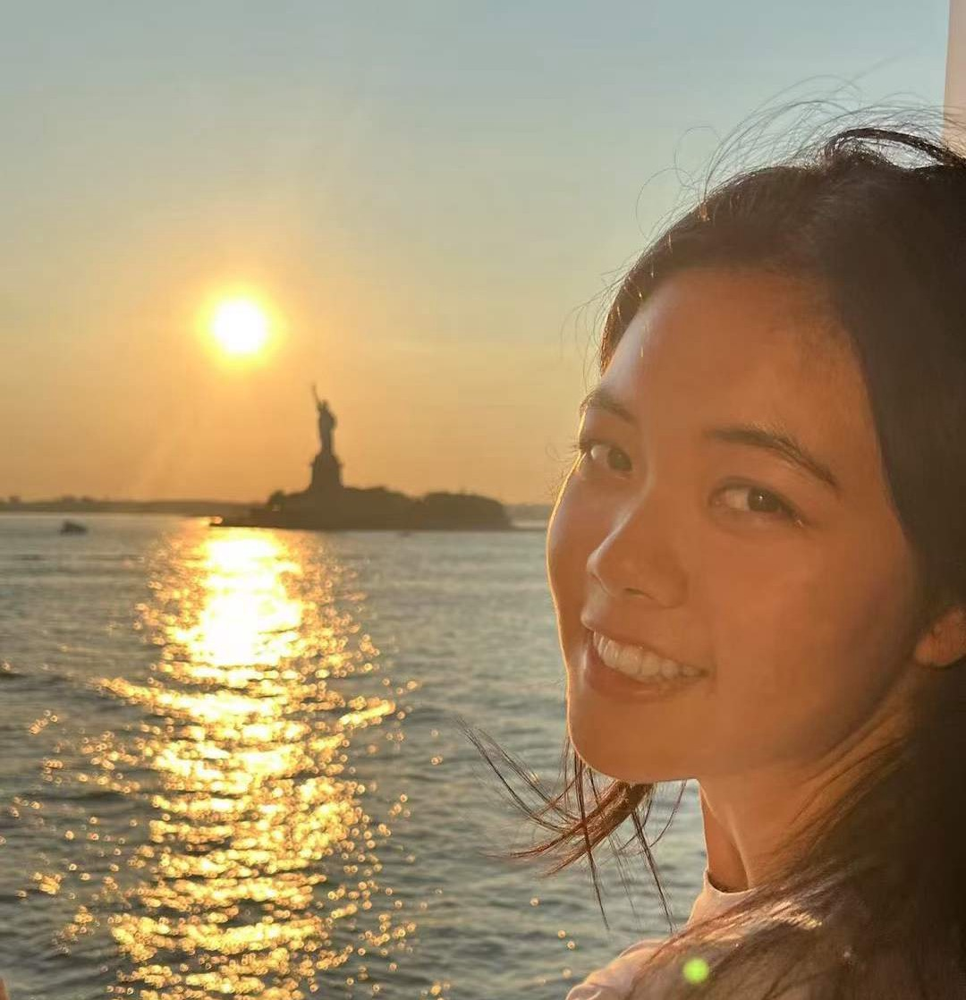

About

b. 2004
I'm Carina. I study computer science in the joint bachelor's program between City University of Hong Kong and Columbia University.
- 2004–2022Chengdu
- 2022–2024City University of Hong Kong
- 2024–2027Columbia University
Hobbies
- Painting
- Fortune-telling astrology, tarot, the I Ching
- Climbing
- Swing dance just a little